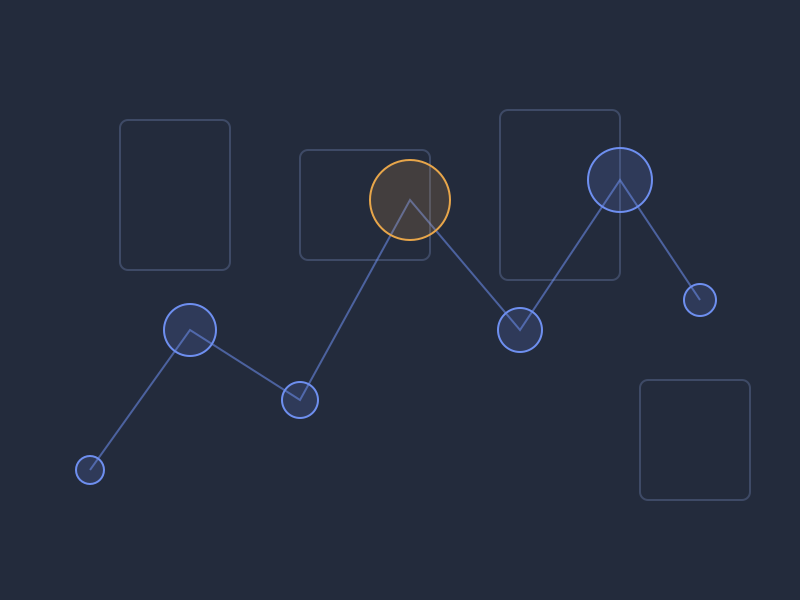
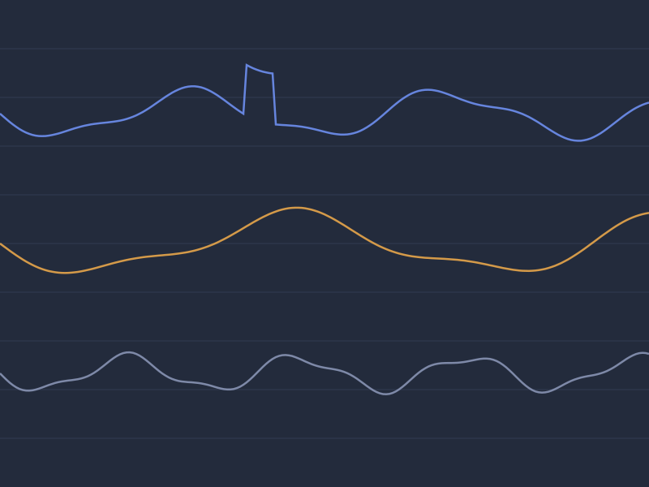
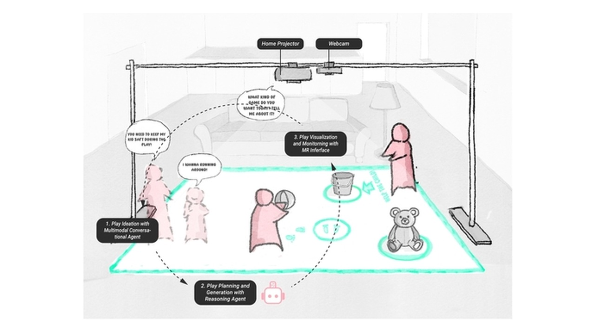
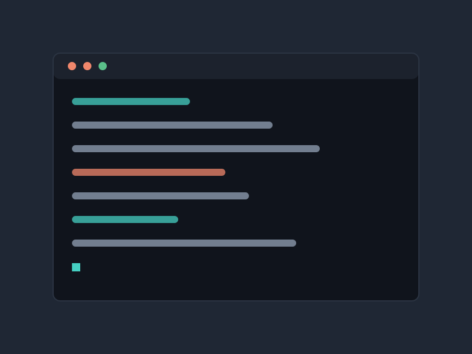
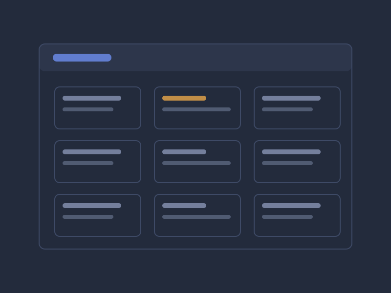
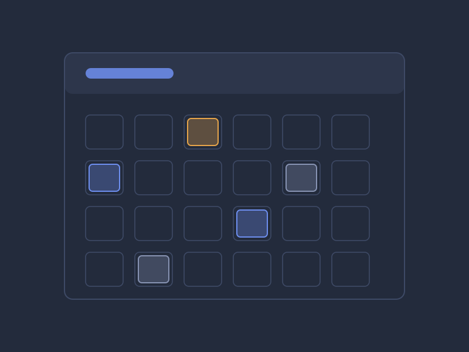
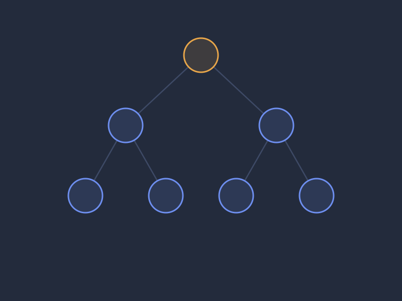

🔬Research
-

Proactive AI VR Museum Companion
In progress · Extended Horizon Lab
A Unity VR system built independently on Meta Quest 3 with Pupil Labs Neon XR eye tracking. It processes gaze, fixation, pupil and dwell-time data to estimate where a visitor's attention is, maps real-time gaze onto 3D museum objects, and uses that state plus interaction history to decide when an AI companion should speak rather than waiting to be asked.
Lead developer
- Unity
- C#
- Python
- Meta Quest 3
- Pupil Labs Neon XR
- Eye Tracking
- AI Agents
-

PulseCoach: State-Aware AI for XR
UIST '26 Student Innovation ContestUnder review
Combines physiological sensing, AI and augmented reality for adaptive coaching. EDA, HRV, PPG and IMU signals from an EmotiBit estimate user state in real time and trigger AR interventions timed to when a cue will actually land, rather than on a fixed schedule.
Co-author
- EmotiBit
- Python
- EDA / HRV / PPG
- IMU
- AR
- Multimodal Sensing
-

Playground+
Projection-based interactive XR · Extended Horizon Lab
A projection-based mixed-reality play system pairing a home projector and webcam over a shared floor space. I integrated a ZED 2i stereo camera while preserving webcam compatibility, lifting real-time performance from roughly 19 FPS to 26 FPS, and added depth sensing and perception on top of it so the AI agent could gauge where people were in the space and how they were moving. I also planned the full physical deployment — camera placement, projector selection, mounting, interaction space, computing requirements and budget.
Research developer
- Unity
- ZED 2i
- OpenCV
- Depth Sensing
- Computer Vision
- Projection Mapping
💻Software Projects
-

Facial Recognition ATM
Solo project · C++, Python, OpenCV
An ATM login system that replaces the PIN with real-time facial recognition, trained on labeled image sets using Haar Cascades and LBPH. It connects to SQLite to read and modify account data after authentication, with a CLI for balance checks, withdrawals and transaction logging. Authentication, interface and database live in separate layers, and failed detection, database errors and unauthorized access are handled as first-class states rather than crashes.
Creator
- C++
- Python
- OpenCV
- Haar Cascades
- LBPH
- SQLite
-

Job Application Organizer
Full-stack · Java, React
A job tracker with Java backend logic and a React frontend. It uses the State design pattern via inner classes to drive transitions through Interview → Offer → Closed, ArrayLists with custom comparators for sorting, searching and filtering, and simulated REST endpoints so status changes reflect in the UI in real time. The architecture is built on interfaces and method overrides so new states can be added without touching existing ones.
Creator
- Java
- React
- REST
- State Pattern
- OOP
-

Class & Event Scheduler
Multi-platform · Java, C, React
A scheduler for academic classes and user-defined events across Java, C and React. Inheritance and polymorphism separate class behaviour from custom-event behaviour, search filters narrow the catalog, and timers and flags drive reminders. Built with a team on Agile sprints, with GitHub for version control and JUnit tests for module correctness.
Co-creator
- Java
- C
- React
- JUnit
- Agile
- Git
-

Data Structures Engine
CSC 316 · Java
A Java system built on AVL trees, binary heaps and adjacency lists. It loads structured data files and runs efficient searches, sorts and lookups, schedules weighted tasks through a custom heap-backed priority queue, and runs shortest-path and minimum-spanning-tree algorithms over the graph. Hash tables handle fast access with chaining and open addressing, and the whole thing was tuned against Big-O analysis with JUnit tests on the edge cases.
Co-creator
- Java
- AVL Trees
- Heaps
- Graphs
- Hash Tables
- JUnit
📘Coursework
-
C
Decimal Math Calculator
Decimal arithmetic with precision control, parsing via fgets/strtod/sscanf, manual memory management and file I/O. Debugged in GDB against division by zero and buffer overflow.
-
C
Deck of Cards
Card simulation using structs and arrays, Fisher–Yates shuffle with direct pointer manipulation, dynamic allocation for drawn cards and file I/O for persistence.
-
Java
Connect Four
Console game with 2D-array board rendering, turn management, horizontal/vertical/diagonal win detection, and input validation against illegal or overflow columns.
-
Java
Automated Coffee Shop
Self-service shop simulation with classes for customers, drinks, orders and inventory, dynamic menu pricing, restocking, and JUnit coverage of order and restock scenarios.
-
Java
Patterns Generator
Console pattern renderer using nested loops and method decomposition, with input validation and JUnit tests across edge sizes.
© 2026 Nathan Tran · Raleigh, North Carolina